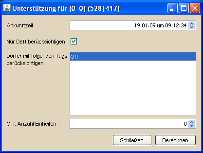

Das Unterstützungswerkzeug |
|
|  | |
Voraussetzung für die Verwendung des Unterstützungswerkzeugs sind vorhandene Truppeninformationen in der Truppenübersicht. Diese können entweder aus dem Spiel importiert oder manuell in der Truppenübersicht eingetragen werden. Relevant sind hier nur die Eigenen Truppen, da dies die einzigen Truppen sind über die der Spieler verfügen kann. Die Anzahl der Einstellungen des Unterstützungswerkzeuges ist recht überschaubar. Natürlich muss zuerst die gewünschte Ankunftzeit angegebene werden. Die Option "Nur Deff berücksichtigen" hat den Hintergrund, dass man im Notfall durchaus mal mit LKav oder sonstiger Off ein AG blocken kann, daher ist es für diese Fälle möglich, auch Off-Einheiten als potentielle Unterstützung zu berücksichtigen, indem man den Haken entfernt. |
|
| Wie bereits im Text hervorgehoben, bezieht sich der Wert der minimalen Anzahl Einheiten auf die langsamste, mögliche Einheit. Nehmen wir beispielsweise ein Dorf, in dem 300 Speerträger und 9000 Schwertkämpfer stehen. Die Unterstützung muss in 20 Minuten am Ziel sein, die minimale Anzahl Einheiten ist auf 500 eingestellt. Demnach wird das eben genannte Dorf für eine mögliche Unterstützung komplett ignoriert, da die 9000 Schwertkämpfer nicht rechtzeitig ankommen würden und die 300 Speerträger die 500 Einheiten Grenze nicht übersteigen. | |
Mögliche Unterstützungen |
|
 |
|
| Das Ergebnisfenster zeigt die möglichen Unterstützungen für die gewählten Einstellungen. Die zwei Buttons im oberen Bereich dienen dazu, die gesamte Verteidigungskraft aller Unterstützungen anzuzeigen, bzw. die Laufzeiten für die gewählte Unterstützung. Gewählte Unterstützungen können direkt aus der Tabelle über die entsprechenden Shortcut-Funktionen in einen Angriffsplan kopiert oder als BB-Code exportiert werden. | |
Shortcut-Funktionen |
|
|
|
| Der Sonderfall der Unterstützung mit Paladin ist momentan nicht berücksichtigt. Der Paladin zählt als eine normale Einheit mit der Laufzeit von 10 Minuten pro Feld. Daher würde das oben erwähnte Dorf mit den verwendeten Einstellungen auch wegfallen, wenn dort ein Paladin stationiert wäre. | |